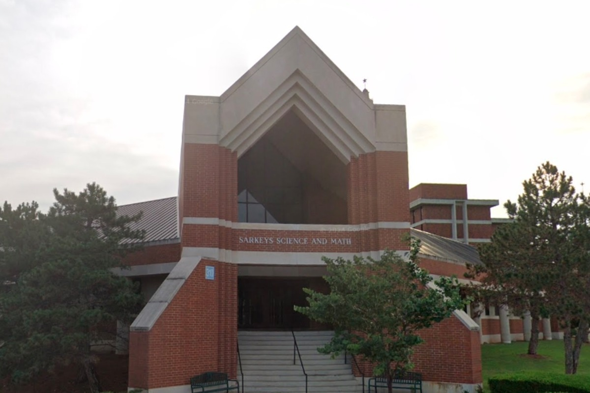
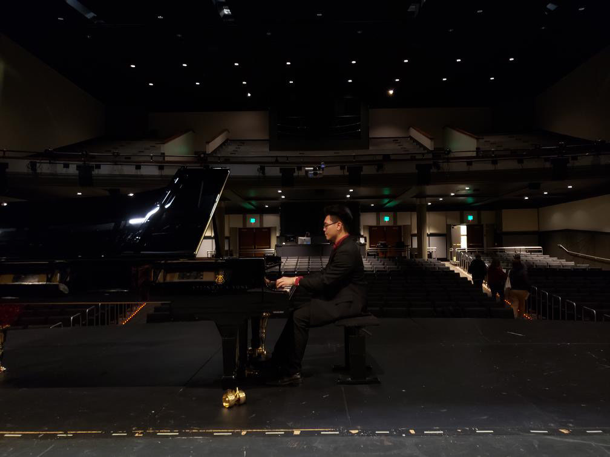
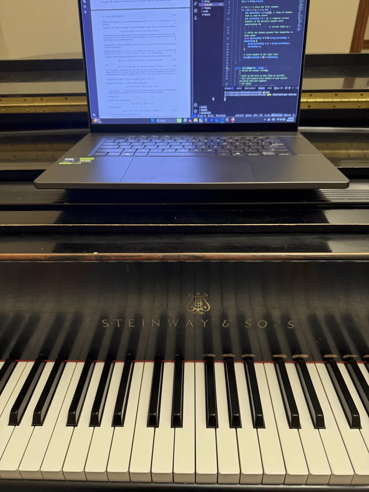

About Me
I’m a Computer Science student at Oklahoma City University (Class of 2028) with a strong interest in software development, web technologies, and problem-solving through code.
Outside of tech, I involve myself with music, whether that may be as a gigging musician or studying other musicians' compositions to create my own.
I hope that in the future I will be able to merge those two worlds into one big project that I can be proud of.
Hobbies
Coding
Writing, studying, & performing music
Watching Anime
Youth leader at
ĐMVNNT Thiếu Nhi Thánh Thể
ĐMVNNT Thiếu Nhi Thánh Thể
Lion dancing drummer for
St. Andrew Dũng Lạc Association
St. Andrew Dũng Lạc Association